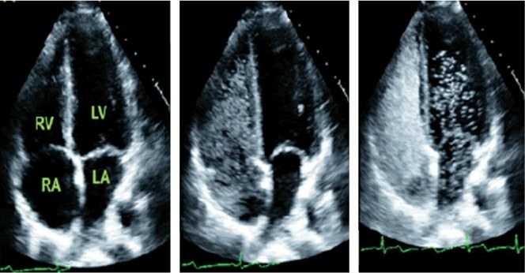

Fig. 47.2 · Hemorragia tras trombólisis (Marino 2024, p. 39). Se enciende cuando la PA pasa de 180/105 con tPA.Fig. 47.1 · burbujas en el foramen oval permeable

El émbolo paradójico es un origen del ictus (Marino 2024, p. 38-39).Las fuentes de este modelo
Lo que crecerá
Notas: lo que la fuente no dice, lo que discrepaPara profundizar: lo que el modelo no enseña